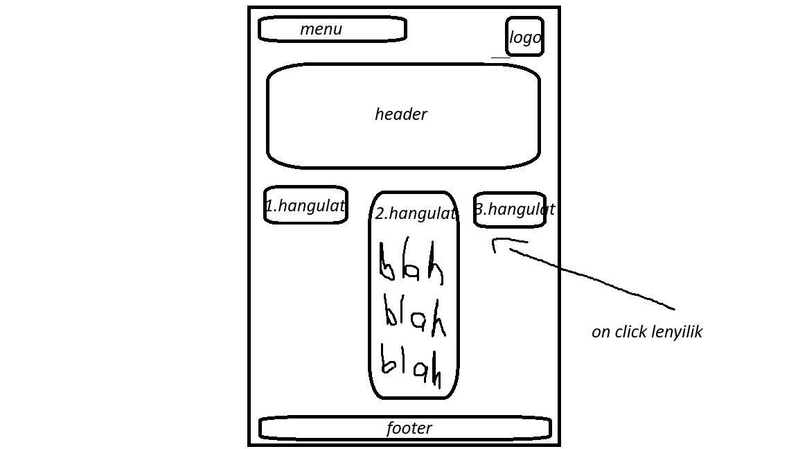

Műhely
feladatmegosztás, munkakörök
Máté:
- 1/3 oldal
- zenei összehasonlítás
- stilusok bemutatasa
- css stilus osszehangolas
- javítás
Szalka:
- 1/3 oldal
- zenei hangulatok, példák
- műhelyoldal
- css stilus osszehangolas
- javítás
Attila:
- 1/3 oldal
- boritoterv
- tablazat
- css stilus osszehangolas
- tesztelés, ellenőrzés (1.heti)
1. heti terv
Műhelyoldal kialakítása, mind a három oldal elkészítése. Portfólió jegyzetelése.
Szalka kezdetleges tervrajz:

Attila kezdetleges tervrajz:

Máté kezdetleges tervrajz:

09.14:
Munkakiosztás:
- Máté: Kordinátor
- Szalka: Műhelyoldal kódolása
- Attila: Hiányzott, lelki segély
2. heti terv
Oldalak tartalmának bővítése, oldalak összehangolása, ellenőrzés, javitás.
Szalka ideiglenes oldal:

Attilaideiglenes oldal:

Máté ideiglenes oldal:

09.21:
Munkakiosztás:
- Máté: Hiányzott, lelki segély
- Szalka: Zenék oldalhoz adása, JS (gombok), muhely oldal jegyzetelése
- Attila: Weboldal alap elkészitése
09.27:
Mindenki befejezte a feladatát, javítás, ellenőrzés